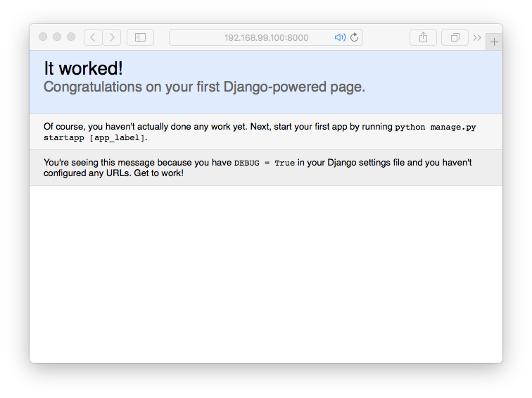

Using Docker in PyCharm¶
Modern development workflows emphasize isolation and reproducability in development and production. Docker and its platform approach to containers has become very popular. With PyCharm Professional Edition 5, Docker is now supported as a remote interpreter.
Let’s take a look at PyCharm’s Docker integration in action.
Summary¶
- Get a Django-oriented Docker image pulled locally
- Make a sample Django project
- Create a Docker interpeter to run it
- The Django run configuration makes a new container on start and removes it on stop
Overview¶
In Python, when you run an application – a Django site, a database
script, etc. – you are running it in an environment. Python has some
tools to manage the environment and make it reproducible, such as
virtual environments, pip requirements.txt files, and setup.py
dependencies. But what about the non-Python parts of application?
Containers are one solution to this. In Docker, a container is an isolated universe with software, running inside your computer. They are fast and easy to create, start, stop, and destroy. This is ideal, not just for development, but for deployment as well.
PyCharm 5 provides the beginning of a series of steps towards “develop with pleasure” using containers and Docker. Namely, PyCharm 5 supports project interpreters that are executed in a Docker container.
Preparation¶
First, make sure docker and docker-machine are setup in your
environment. The Docker installation is painless and the
website docs
are quite friendly. You’ll need a Docker “host” virtual machine setup
and running, including on Linux. On Windows and OS X, installing the
Docker Toolbox is effortless.
Next, we have to decide what software we want in our containers. In
Docker, containers are built using “images”: collections of
pre-installed software plus configuration that is called during
container creation. Unlike other interpreters in PyCharm, you don’t
visit the Project Interpreter preferences to add Python packages.
All dependencies need to be baked into the Docker image you choose.
This blog post is based on the minimum/docker-django-mysite Docker
image, which includes enough Python/Django software to run the
PyCharm-generated Django starter project. You can fetch that onto your
system with this command:
$ docker pull minimum/docker-django-mysite
Once that Docker image is locally available and the Docker “host” is running and knows about it, PyCharm can make Docker interpreters for your project, as containers based on that image.
Alternatively, you can skip this step and later pull in the image while creating the Docker-based remote interpreter by simply typing in the image name during creation.
Note
You have the option of making your own image as well, using a
Dockerfile. Once you make the image, you can tell PyCharm to
make Docker interpreters based on it.
Create Django Project¶
Let’s make a Django project, then make a Docker interpreter for it. In
PyCharm, choose File -> New Project, click on Django, and
follow the normal process for making a Django project.
During project creation, you’ll have to use a local interpreter. If you try to make a Docker interpreter, PyCharm will give a warning saying you can only use a local interpreter.
The result of this step is a directory on your local computer with sample Django code and a Django-specific PyCharm Run Configuration.
Make PyCharm Docker Interpreter¶
On to the important part. We need to define a “remote interpreter” that runs in a PyCharm Docker container.
First, go to Preferences -> Project Interpreter and click on the
gear to the right of Project Interpreter near the top. In the
Configure Remote Python Interpreter dialog, click the Docker
button. You should see the following:
Click the menu dropdown for Machine Name. It will likely have one
entry named default. Choose that, and you will see the following:

Choosing default gives PyCharm a way to find the Docker daemon, which
can let PyCharm know which images are available locally. Hence the
dropdown for Images. Click on the dropdown and choose
minimum/docker-django-mysite:latest as the image, then click Ok.
You now have a Docker container that will be used as your project interpreter. PyCharm features like autocompletion, code inspections, and checks will be driven by this interpreter.
Run Django¶
Now that we have a Docker container for our project interpreter, let’s use our Django-flavored Run Configuration to run it. Just to be safe, edit the run configuration to make sure it is using the Docker-oriented interpreter.
What does PyCharm do when it runs this configuration:
- First, it creates and starts a new container based on the image we named when creating the project interpreter.
- This container mounts your project directory into the container at
/opt/projectin the container. Note: On Linux, you currently have to perform this volume mapping manually. - This container also mounts volumes needed for PyCharm to do its work: Python skeletons and Python library sources.
- It then executes the run configuration’s Python command.
If you are running PyCharm 5.0.2 or older, there is one fix you need to do:
- Run -> Edit Configurations and select the PyCharm-generated Djano run configuration
- In the
Hostfield, enter0.0.0.0
When you click the “Run” button, Django will be started. Yay, we are running a container! In fact, we can go on to test running, debugging, code coverage, profiling, and all the other ways to run a configuration. But first, let’s click the link in the console to open the Django site in our browser:
You can confirm this using the following Docker commands:
$ docker ps -l
This shows the most recently-run container. As you can see, our
minimum/docker-django-mysite-based container is currently running.
Likewise, when you click the “Stop” button in PyCharm to stop the running Django configuration, PyCharm not only stops Django, but it also stops the Docker container. In fact, it deletes the container. Each time you run, PyCharm creates a new Docker container and starts it.
You can confirm this. After re-starting the Django run configuration, type:
$ docker ps -l
The value in the CONTAINER ID column, as well as the NAMES
value, is different from the previous values we got from running
docker ps -l.
Current Limitations¶
Docker integration in PyCharm is already useful, but is still only a start. Much more is being done for future releases. For example:
- Docker Compose. This is a big item and a frequently-requested feature. The discussion is happening in a YouTrack ticket in the PyCharm ticket system and work is already being scheduled.
- Linux mounts. As noted in the PyCharm online help, on Linux, you have to mount your project directory manually via VirtualBox. This issue is obviated by work on the next point.
- Customizing the container. Docker lets you pass arguments when creating/running a container. These arguments include volumes to mount and ports to forward. PyCharm doesn’t currently let you customize this in the run configuration, but this is being worked on.
- Only Django for web ports. If you want a container with HTTP (or any other) ports available, the Django run configuration is the only one, and that is only for HTTP. Other run configurations (Flask, Pyramid, etc.) won’t forward any ports. Nor will attaching to a database, or orchestrating multi-container apps (unless your Dockerfile forwards the ports.) This is really just emphasizing the previous point, and as said there, help is on its way.
Conclusion¶
With this release we’ve shown the beginnings of what we can do with Docker integration, and the results are promising. Docker has the potential to be a first-class part of PyCharm’s “Develop With Pleasure” workflow.